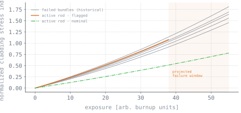

The problem
Inside boiling water reactors, zirconium fuel cladding absorbs hydrogen over its service life. Enough hydrogen and you get hydride embrittlement; combine that with high residence time and bundles crack and fail.
The failure mechanism was understood. When a specific cell would fail was not.
Why it was hard
Decades of operational data existed across five reactor sites, but in inconsistent historical formats with no unified schema — not queryable, and not structured for modeling.
Prediction errors are costly in both directions. Missing a failing rod results in a fuel failure event. False positives trigger unnecessary bundle pulls and outage time.
The approach
- Database. Built a Python-based database covering 200+ BWR fuel units across five sites — neutron fluence, fuel centerline temperature, burnup, and residence time, per unit, in one consistent schema.
- Modeling. Applied thermal-mechanical constitutive relations to estimate cladding stress state from operational variables. Physics-based features were used rather than empirical correlations, as traceability to physical mechanisms is required for nuclear regulatory review.
- Failure signatures. Plotted trajectories for bundles that had actually failed and built a library of characteristic curve shapes — the signature of a cell heading toward failure.
- Matching. Wrote a comparison routine scoring live data from currently-operating rods against that signature library.

Technical stack
Engineering challenges
Data harmonization
The majority of effort went to reconciling heterogeneous historical records — standardizing units, nomenclature, and cell reference conventions across five sites and multiple decades of operation.
Survivorship in the signature library
You only have detailed histories for bundles that failed and got investigated. Building a matcher without accidentally encoding that bias takes deliberate effort.
Regulatory traceability
Every modeling step required a traceable physical basis to meet NQA-1 documentation requirements. This constrained the method to physics-based approaches over purely empirical fits.
Results
- Identified specific active fuel rods tracking toward failure and delivered a named high-risk cell list.
- Enabled targeted inspection of those bundles instead of general sampling — a shift from reactive repair to predictive maintenance.
- Presented findings to the thermal-mechanical team; work documented to NQA-1 requirements.
What I learned
The primary value was in the database, not the model. Clean, consistent, queryable data made the analysis tractable; without it, the problem was intractable regardless of method.
In a regulated environment, model explainability is a requirement, not a preference. Predictions that cannot be traced to physical mechanisms will not be acted upon.
Figures here are illustrative and axes are generalized. Specific plant data stays with the plant.